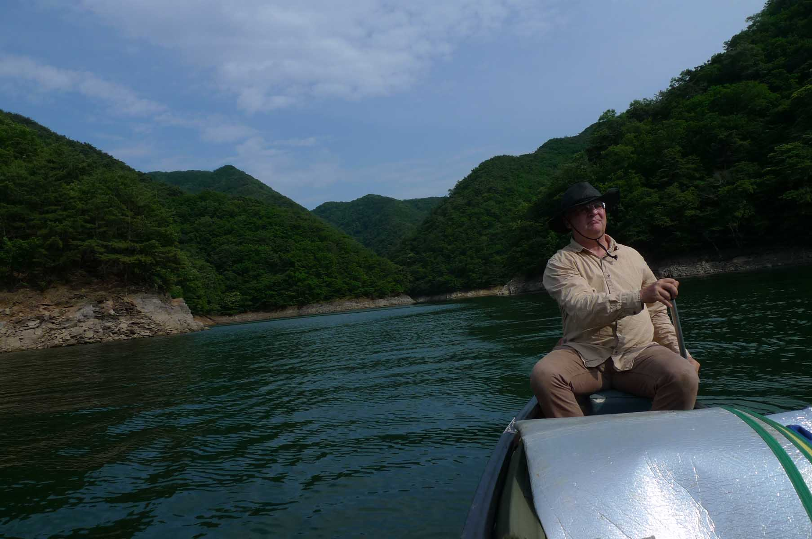

Canoeing the DaeCheong Reservoir 대청호
The origin of this trip was my long time desire to canoe on the Daecheong (대청호) reservoir which is located close to the city
of Daejeon. It was formed by the damming of the Gum River (금강) back in 1972. This lake (or reservoir) is the water supply
for many of the communities of Central Korea as well as being the main water supply for the city of Daejeon. The damming of
the river formed one of the largest lakes in Korea and is an example of former President Park Chun Hee’s (박정희) ambitious
program to ensure that there is a year round supply of water for agriculture and the nearby communities.
Friends with a home on the lake
I did this trip with Jens Paulsen, a professional man from Germany whom I know from our hiking club, The Daejeon hikers.
Jens and I prepared for this adventure by an advance scout to this area on June 6th. Since I have good friends that had
purchased a home in OkCheon (옥천) near the reservoir a few years ago, who are familiar with the area and had a boat slip near
their home; we paid them a brief visit. Later we walked down to the lake and explored both the best place to put the canoe
into the water as well as where we could park the car at the start of our trip in 2 days’ time. As it turned out, there were
many locations to launch the canoe but we decided on one that seemed to be the best as it was not too steep and allowed us
to park the car nearby facilitating the offloading of all our supplies. Once we had accomplished our task we then returned
to Daejeon with the planned intention to meet Saturday June 8th in the morning at 8 a.m.
Loading the gear into the car.
Saturday morning I picked up Jens and his gear at his home, we loaded up the car and drove to pick up the canoe.
Unfortunately it had been moved from under the protected location so the bags and gear were spread around on the grass and
the canoe was partially filled with water. This added another hour to our preparation time before we could load the canoe on
the car roof. We immediately drove to my friend’s home and proceeded to off load the canoe at the boat ramp and park the car
nearby. After loading up the canoe with our gear, we were soon off on the trip to explore this beautiful lake.
Motorboats
Unfortunately, one of the first and major challenges turned out to be the presence of motor boats. They were often pulling
water skiers generating a rather large wake. It was necessary to turn into these waves avoid capsizing. Jens was in the bow
of the canoe when he was splashed with one wave which hit the canoe with an exceptional force allowing water to enter the
canoe partially soaking one of the sleeping bags. Of major concern was that water had entered Jens’ cell phone. He tried to
dry it out to no avail. It was dead and luckily mine did not get wet as we depended on it for the rest of the trip including
for critical information about the weather. An important lesson learned from this incident is to keep your phone in a zip
lock or other water proof bag in expectation of the unexpected.
Seeking a camping site
We immediately decided the first priorities were to eat lunch and then find a suitable camping location that was far enough
from the main channel to be protective and yet far enough from the main channel to not be disturbed by all the motor boat
noise. On the way to finding a camping location we did find a promontory with a picnic table and had lunch there. After that
we continued up the channel of the old river bed and explored some of the inlets. Most of the shore line was very rocky and
steep so there were few locations suitable for camping. To add to our difficulties, the reservoir was about two meters lower
than usual as there had not been much rain this spring. Finally in the afternoon we found one location that was suitable for
camping. There were signs that others had used this location in the past for camping. We immediately set up our tents and as
it was late in the afternoon I started the stove to prepare a meal.
Exploring the lake
After the meal, we set out again to explore the lake. It was easier to canoe as there was less of a load in the boat and
there were fewer motor boats on the lake now. It was on this trip that we noticed something that looked like a platform on
the peak of one of the hills. Around 7:30 p.m. we returned to the camp site to organize the campsite for the first night of
camping. The noises in the adjacent woods were varied, sometimes loud during the night but in spite of this we each had a
good night’s sleep.
Stove was leaking gas
The next day, Sunday June 9th, was very sunny with a slight breeze. For breakfast I was going to cook bacon and eggs with
bagels but unfortunately the stove was leaking gas and could not be used. So instead of a hearty cooked meal we made due
with a simple peanut butter sandwich with juice. We decided to explore more of the lake and remembered the large platform
structure on top of one of the nearby peaks. Figuring that this would be a good location to hike to and view the lake from a
high vantage point, after coming out of our inlet, we headed for the base of that mountain. There were some fishermen on a
promontory there and we tied up the canoe at the base of a rock ledge.
Bat Cave
Packing a lunch for our journey we then started up the trail that led to a nearby valley. I was surprised to see a number of
shallow caves along the trail. One was called in Korean “Bat Cave.” What was unique about the caves is that the rock type
was shale, not the usual limestone which is common in a humid climate. There were no signs on the trail except one that said
that MaeBong Peak (매봉) was 1.5 kilometers ahead. We stopped along the way to eat some delicious mulberries as they were ripe
and in season. From there we climbed up through a farmer’s field and higher up through a grave yard. Cutting through the
woods, we encountered the trail that we believed would led us up to the platform that we’d seen the day before. We plodded
through a cool but sometimes steep pine forest trail which paralleled the edge of the lake below, periodically allowing us a
view of the lake below. I was certain this was the trail that would eventually lead us to the platform we had seen yesterday
and sure enough after an hour of hiking we reached our goal.
Platform
A family was just leaving when we arrived we spread out our food and had a relaxing lunch overlooking the lake. In front of
us was an excellent view of the “S” shaped meanders that characterize this reservoir. While relaxing on the platform, I
tried to check the weather report but from this vantage point was no signal. Therefore I contacted my friend James who
responded that there was a warning that there would be a storm passing through the area this night. After hearing this Jens
and I decided to not stay another night on the lake. I have bad memories of packing up wet gear after prior canoe trips and
did not wish to repeat the experience.
Jens navigates

We hiked back to the canoe and immediately paddled back to the camping location where we took down the tents and packed all
the gear into the canoe. By now we had an easy landmark for the finding of the inlet; it consisted of three trees on a small
promontory to the right as one entered the inlet. As this was a deep inlet, it was a perfect location because motor boats
would find the inlet too narrow for water skiing. By about 4 p.m. we were ready to return to the boat ramp that we had left
the day before. I depended on Jens to navigate our way back because he was paddling in the rear of the canoe and therefore
in charge of direction.
On the way back
On the way back to the starting point, we again encountered more motor boats and had to be very careful to head into the
waves. Despite our focus on combating waves from motorboats we were still able to admire some large villas high above the
level of the lake at the top of the cliffs. One had an amazing expansive deck overlooking the lake. Soon we reached the boat
ramp where we unloaded the canoe, moved the car near the canoe for easier loading, shifted the canoe to the car roof rack,
managed to get all the gear into the car and stopped at my friend’s home before heading back to the location where the canoe
is stored arriving about 7 p.m. Finally after an eventful and memorable canoe journey on Lake DaeCheong (대청호) we headed
home.
My impression of the canoe trip on DaeCheong Lake (대청호)
As I stated in the beginning, I had wanted to canoe on this lake for some time because it is the largest lake near Daejeon
and is set deep in the valley of the river that it dammed, the Gum River. Personally, I feel the most outstanding features
of the lake are its location (near to Daejeon), its setting among picturesque mountains, its isolation and a variety of boat
ramps leading to the lake making it accessible. The most negative aspect was definitely the number of power boats that use
the lake which was surprising given that it is a protected water supply. So we did not expect to see as many boats as we did
some of which were pulling water skiers meaning that we had to be extremely cautious. On the last day, when we were close to
the boat ramp, one motor boat purposely came very near to us. Its force could have easily swamped the canoe save for our
bringing the boat around fast so we headed into the waves. Other than the motor boats, there were some small fishing rafts
near the shores. Another issue we encountered was the lack of camping location as a result of the rocky and steep shoreline.
Highlight
On the flip side of the coin, the highlight of the trip for me was the hike up the mountain. When you are canoeing on the
lake itself the line of sight is short indeed. You are really deep in a river valley and the meandering nature of the
channel means that it is hard to see any distance. However from the platform you can have a bird’s eye view of the area
allowing you to see for a great distance. This provided a prospective that is impossible when on the body of water below.
The higher elevation also afforded a soft breeze as opposed to the calm air of the lake below. I would recommend starting
far up the river and canoeing for a few days to the lake. In that way one would have both the experience of river canoeing
with a current as well as a feeling for the river that forms the lake on the end of the trip.
Low water levels
Finally the other wonderful feature of the trip was just the absence of homes and civilization. But this pleasure was offset
by our dismay at all the debris and trash in the area where we camped. It seems few today practice the training I had
received since young of carrying out more than you bring in when camping. As I previously mentioned, the lake was very low
(we estimated that it was about two meters low) but this was immediately preceding the monsoon season which hopefully will
restore the lake to its regular water levels. I would recommend this lake trip for anyone who wishes to enjoy the beauty of
the natural forests of central Korea.
Comparison of ChungJu Lake (충주호) and DaeCheong Lake (대청호)
Now that I have canoed on both of the above lakes I would like to provide a comparison of canoeing on the two lakes. At the
time of the above trips both lakes were experiencing low water levels. The ChungJu lake (충주호) was especially low however,
more so than DaeCheong Lake (대청호). Having said that I still much preferred canoeing on ChungJu lake (충주호) for the following
reasons: First there were no motor boats on the lake, there was a national park adjacent to the lake and trails were
accessible from the lake. We did not leave the lake to hike in the national park but the mountains looked much higher and
since it was a national park I am sure that the facilities were substantial. Also since the shore line was not as rocky it
had more potential camping locations available. The lack of motor boats may have been due to the extreme dry spell at the
time. My Korean friends have told me that because of the drought it was not a time for enjoyment when the country was having
a difficult time due to the weather which was likely the reason that the camp ground where we stayed was empty.
Trash
The major negative feature of ChungJu lake (충주호) was its distance from Daejeon. It took at least two more hours to reach a
suitable boat ramp and camping area. Additionally, as far as I know ChungJu lake (충주호) has more commercial camping sites
whereas DaeCheong Lake (대청호) in the past had a few but we could not find any operating presently. Another consideration was
the excessive amount of trash on the shores of DaeCheong Lake (대청호). We were disappointed at the amount of bottles, trash
and even tires left behind by visitors. I can’t fathom why this has happened to one lake and not to the other. It cannot be
related to the proximity to a large city because both lakes are near large cities. All negative factors aside, both lakes
offered a wonderful experience of lake canoeing.